7°
EXPLORACIÓN
¿Para qué es este momento?
Antes de aprender cómo se representan las fracciones o cómo se identifican fracciones equivalentes, vas a analizar situaciones reales donde una misma cantidad puede dividirse de diferentes maneras.
En este momento no se usan reglas ni fórmulas.
Lo importante es observar, comparar y pensar.
Situación 1: Repartiendo una pizza
Cuatro estudiantes comparten una pizza del mismo tamaño.
En el primer grupo, la pizza se divide en 4 partes iguales y cada estudiante toma 1 parte.
En el segundo grupo, la pizza se divide en 8 partes iguales y cada estudiante toma 2 partes.
Responde:
1. ★ ¿Crees que ambos estudiantes comieron la misma cantidad? ¿Por qué?
2. ¿Qué cambia entre las dos formas de repartir?
3. ¿Qué se mantiene igual en ambas situaciones?
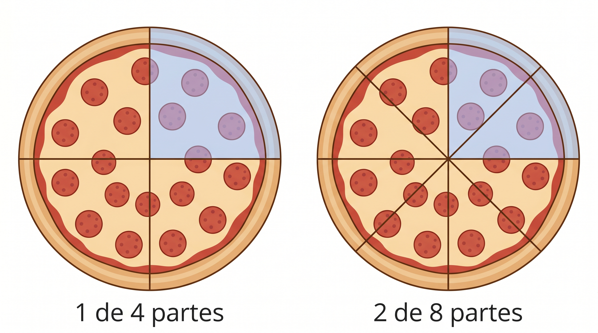
Situación 2: Agua en botellas
Una botella de agua tiene 1 litro.
- Camila toma la mitad de la botella.
- Andrés toma 2 partes de una botella dividida en 4 partes iguales.
Responde:
1. ★ ¿Quién tomó más agua o tomaron lo mismo?
2. ¿Cómo podrías describir cada cantidad con tus propias palabras?
3. ¿Las dos formas de tomar agua representan lo mismo o algo diferente?
Situación 3: Trayecto recorrido
Un estudiante debe recorrer un camino completo para llegar al colegio.
- El lunes recorre 3 partes de un camino dividido en 6 partes iguales.
- El martes recorre 1 parte de un camino dividido en 2 partes iguales.
Responde:
1. ★ ¿En cuál día recorrió más camino?
2. ¿Qué observas sobre el tamaño de las partes en cada caso?
3. ¿Cómo influye el número de partes en la cantidad recorrida?
Piensa y escribe en tu cuaderno
1. ★ ¿Crees que una misma cantidad puede representarse de diferentes formas? Explica con un ejemplo.
2. ¿Qué es más importante: el número de partes o el tamaño de cada parte? Justifica.
3. Escribe una situación de tu vida diaria donde una cantidad se pueda dividir de dos formas distintas.
Cierre
Reflexiona:
Si dos personas dividen algo de forma diferente,
¿cómo podrías saber si realmente recibieron la misma cantidad?
ANALIZA
¿Qué vas a hacer en este momento?
Ahora vas a analizar con más detalle lo que ocurre cuando una misma cantidad se representa de diferentes formas.
Todavía no vas a usar reglas ni definiciones formales.
Vas a comparar, observar patrones y sacar conclusiones propias.
Situación 1: ¿Es la misma cantidad?
Observa las siguientes representaciones de una misma barra de chocolate:
- Una barra dividida en 2 partes iguales y se toman 1 parte.
- Otra barra dividida en 4 partes iguales y se toman 2 partes.
Barra de Chocolate A
Barra de Chocolate B
Responde:
1. ★ ¿Las dos cantidades representan lo mismo? Explica con tus palabras.
2. ¿Qué relación encuentras entre 1 de 2 partes y 2 de 4 partes?
3. ¿Qué sucede con el tamaño de las partes cuando se divide en más pedazos?
Situación 2: Comparando partes de una unidad
Analiza los siguientes casos:
- Caso A: Se toma 1 parte de 3 partes iguales.
- Caso B: Se toma 1 parte de 6 partes iguales.
Responde:
1. ★ ¿En cuál caso la porción es mayor?
2. ¿Qué cambia cuando aumenta el número de partes en que se divide la unidad?
3. ¿Qué puedes decir sobre el tamaño de cada parte?
Situación 3: Dos formas de recorrer lo mismo
Un ciclista recorre:
- 2 partes de un camino dividido en 8 partes iguales
- 1 parte de un camino dividido en 4 partes iguales
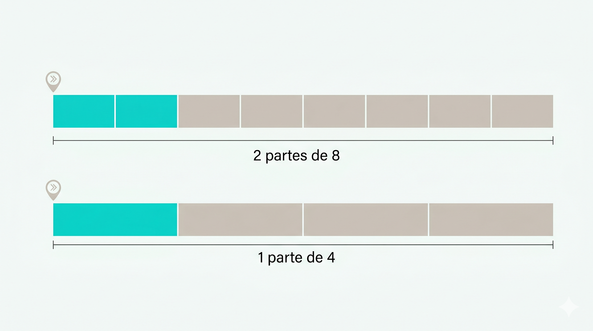
Responde:
1. ★ ¿Recorrió la misma distancia en ambos casos? Explica.
2. ¿Qué observas entre 2 de 8 partes y 1 de 4 partes?
3. ¿Qué tipo de relación crees que existe entre esas dos formas?
Compara y decide
Analiza sin hacer cálculos formales:
- Caso 1: Tomar 3 partes de 6
- Caso 2: Tomar 1 parte de 2
Responde:
1. ★ ¿Cuál representa mayor cantidad o son iguales?
2. Explica cómo lo sabes sin usar operaciones.
Piensa y responde
1. ★ ¿Qué ocurre cuando duplicas el número de partes y también duplicas las partes que tomas?
2. ¿Siempre que aumentan las partes tomadas, la cantidad es mayor? Explica con un ejemplo.
3. ¿De qué depende realmente la cantidad que se representa?
Cierre
Reflexiona:
Si dos fracciones representan la misma cantidad,
¿cómo podrías darte cuenta sin hacer operaciones?
CONOCE ALGO NUEVO
¿Qué vas a aprender en este momento?
Ahora vas a comprender formalmente:
- Qué es una fracción y cómo se representa
- Qué significan sus partes
- Qué son las fracciones equivalentes
- Cómo representar cantidades mayores que la unidad
Aquí sí aparecen definiciones y explicaciones claras.
1. La fracción como representación de una cantidad
Una fracción permite representar partes de una unidad.
Se escribe de la forma:
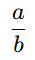
Donde:
- a → indica cuántas partes se toman
- b → indica en cuántas partes iguales se divide la unidad
Ejemplo
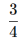
Significa:
- La unidad se divide en 4 partes iguales
- Se toman 3 de esas partes
Interpretación clave
Una fracción no es solo dos números escritos uno sobre otro.
Representa una relación entre partes y una unidad completa.
2. Elementos de una fracción
En toda fracción se identifican:
- Numerador: número de arriba → partes que se toman
- Denominador: número de abajo → partes en que se divide la unidad
Ejemplo
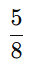
- Numerador: 5
- Denominador: 8
Esto significa: se toman 5 partes de una unidad dividida en 8 partes iguales.
3. Fracciones equivalentes
Dos fracciones son equivalentes cuando representan la misma cantidad, aunque estén escritas de forma diferente.
Ejemplo
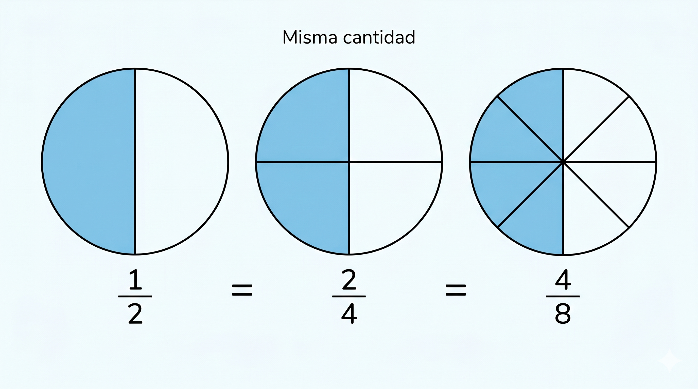
¿Qué ocurre en las fracciones equivalentes?
- Se divide la unidad en más partes
- Pero también se toman más partes
- La cantidad total no cambia
Idea clave
Para obtener fracciones equivalentes:
- Se multiplica o divide el numerador y el denominador por el mismo número
Ejemplo:
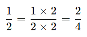
4. Cantidades mayores que la unidad
Una fracción también puede representar cantidades mayores que 1.
Ejemplo
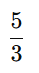
Esto significa:
- La unidad se divide en 3 partes
- Se toman 5 partes
Es más de una unidad completa.
5. Número mixto
Un número mixto combina:
- Un número entero
- Una fracción
Ejemplo
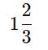
Significa:
- 1 unidad completa
- Más 2 partes de otra unidad dividida en 3
Relación entre fracción impropia y número mixto
Ambas expresiones representan la misma cantidad.
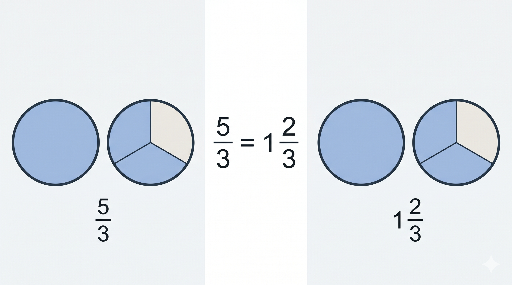
6. Interpretación en contexto
Las fracciones permiten representar situaciones como:
- Repartos (comida, dinero, materiales)
- Medidas (litros, metros, tiempo)
- Porciones de un todo
Ejemplo:
Si 3 estudiantes comparten 2 pizzas iguales:
Cada uno recibe una cantidad que puede representarse con fracción.
Cierre conceptual
Una fracción no es solo un número:
es una forma de representar cómo se divide una unidad y cuánto se toma de ella.
ACTIVIDADES DE APRENDIZAJE
¿Qué vas a hacer en este momento?
Ahora vas a aplicar lo que aprendiste sobre:
- Representación de fracciones
- Elementos de una fracción
- Fracciones equivalentes
- Números mixtos
★ Nivel esencial (obligatorio)
Actividad 1: Identificando la fracción
Observa cada caso y responde:
1. ★ En una pizza dividida en 8 partes iguales, se toman 3 partes.
- ¿Cuál es la fracción?
- ¿Qué representa el numerador?
- ¿Qué representa el denominador?
2. ★ Una botella se divide en 5 partes iguales y se consumen 2 partes.
- Escribe la fracción
- Explica con tus palabras qué significa
Actividad 2: Representación de fracciones
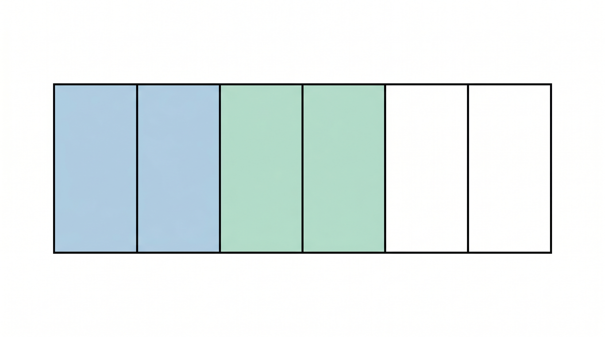
1. ★ Observa la figura y escribe la fracción que representa la parte sombreada.
2. ★ Explica cómo sabes cuál es el numerador y cuál es el denominador.
Actividad 3: Fracciones equivalentes
Completa:
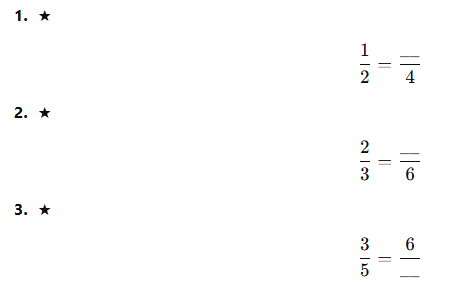
Actividad 4: Interpretación en contexto
1. ★ Tres estudiantes comparten 1 torta en partes iguales.
- ¿Qué fracción le corresponde a cada uno?
2. ★ Un estudiante recorre 2 partes de un camino dividido en 5 partes iguales.
- ¿Qué fracción del recorrido hizo?
Nivel intermedio
Actividad 5: Comparando representaciones
Determina si las fracciones representan la misma cantidad:
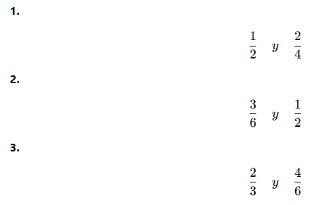
Explica tu respuesta en al menos uno de los casos.
Actividad 6: De fracción a número mixto
Convierte:
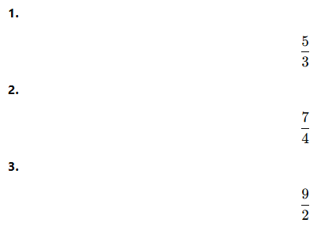
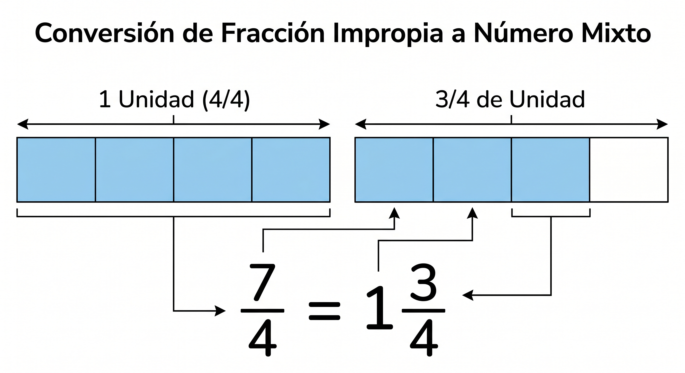
Actividad 7: De número mixto a fracción
Convierte:
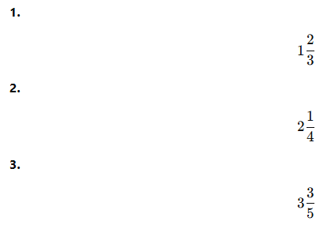
Nivel de profundización (reto)
Reto 1: Pensamiento matemático
Si terminas antes:
1. Inventa dos fracciones diferentes que representen la misma cantidad.
2. Explica por qué son equivalentes.
Reto 2: Situación real
Un grupo de estudiantes comparte 3 pizzas entre 4 personas.
1. ¿Qué fracción recibe cada estudiante?
2. ¿Es menor o mayor que una pizza completa?
3. Explica tu respuesta.
Reto 3: Análisis
Observa:
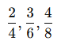
- ¿Qué tienen en común?
- ¿Qué relación encuentras entre numerador y denominador?
Cierre de actividades
Responde:
★ ¿Qué fue lo más importante que aprendiste sobre las fracciones en esta guía?
Fuentes Bibliográficas
Ministerio de Educación Nacional. (2006). Estándares básicos de competencias en matemáticas. Bogotá, Colombia: MEN.
Ministerio de Educación Nacional. (2016). Derechos básicos de aprendizaje en matemáticas (DBA) – Grados 6° y 7°. Bogotá, Colombia: MEN.
Ministerio de Educación Nacional. (2017). Vamos a aprender matemáticas 7. Bogotá, Colombia: MEN.
Colegio Integrado Simón Bolívar. (2026). Plan de asignatura de matemáticas – Aritmética grado séptimo. Cúcuta, Colombia.